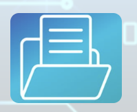
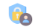
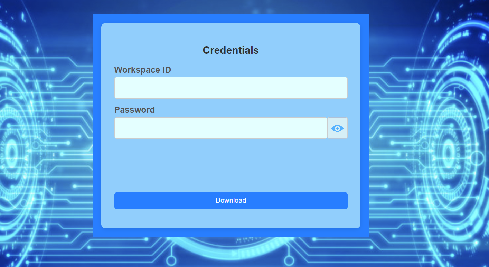

Provide public secure internet access to local files on your PC in two clicks
Get started:
- Press ‘add files’ button
- Enter strong password if you want to restrict access to your files
- Optionally apply end-to-end encryption of file content
- Optionally pack your files into ZIP archive to speedup download and save network traffic. Provide desired archive name (first selected file name or folder name will be used as an archive name otherwise)
- Open ‘select files’ dialog by pressing  button
- Once files are selected they will be added into internal browser storage and public access link will be copied into keyboard buffer. You can past that link into any place: social media comments, messengers etc.
- Press button in credentials column to copy credentials and share them via secure reliable channel
- Use manger page to administrate your shared files
Ten reasons to start using:
- No need to setup SFTP server or any similar software on your machine
- No need in public IP address
- No need to open any ports on your machine
- Your files are always hosted on your PC and never copied to any cloud
- No registration required
- It is completely free
- No file owner data disclosure
- Exceptional level of protection against unauthorized access for files shared with strong secure password
- Short fully anonymous public links that can be shared via any channel (messengers, social networks etc.)
- Only secure https/wss protocols are used for data transfer
Why our password protection is almost impossible to huck:
- Receiver (for instance friend of you) will be redirected to pre-download page after attempt to open short public link

- Now He should enter credentials that you previously shared with him via a secure, reliable channel. Never send credentials along with download link!!!
- Download request with signature be created and sent via https POST channel to file owner. Signature is created based on provided workspace ID and password with strong and secure cryptography algorithm
- So actual credentials are never sent via network or stored on any cloud server
- File owner verify download request signature and initiate upload if signature is correct
- For better security download request has very short ttl(time to live)
- Do not use “Expose workspace ID’’ option if your goal is an ultimate security and protection against brute force attacks
- If end-to-end encryption was applied then protected with password private key will be sent to download page after successful verification only.
Every file encrypted with its own private key
Enjoy our product and provide feedback on email: sfile4share@gmail.com